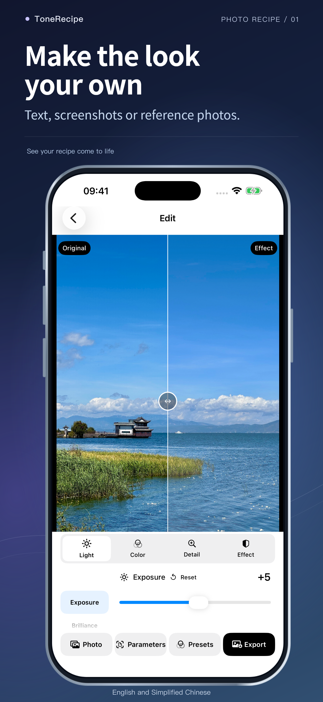
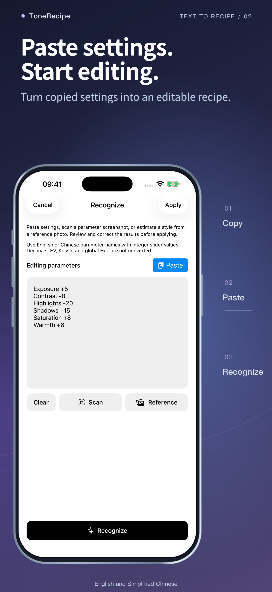
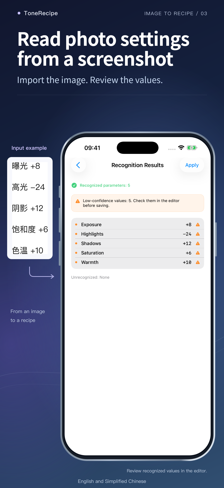
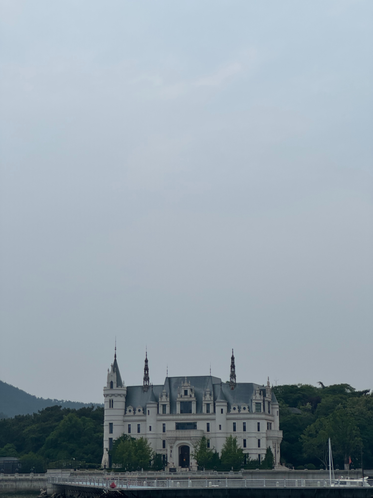
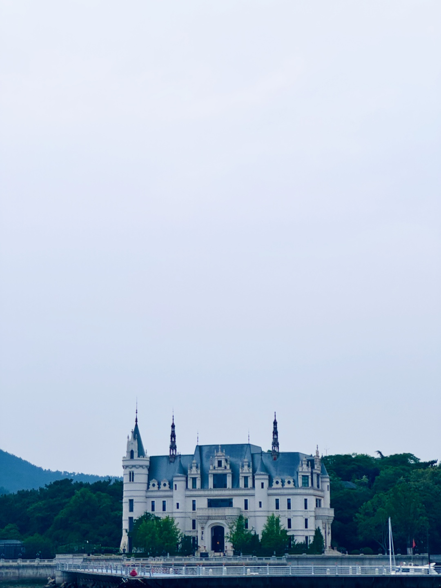

ToneRecipe for iPhone
Apply photo editing settings from a screenshot
ToneRecipe reads slider values such as exposure, highlights, and contrast from a tutorial screenshot or a text recipe. Review the values, apply them to your photo, and save the adjusted recipe as a preset.
See a complete example: the original photo, seven settings, and the result
U.S. App Store China mainland App StoreRequires iOS 17 or later. Supports English and Simplified Chinese. Available on the App Store in China mainland, the United States, the United Kingdom, Canada, Australia, New Zealand, and Singapore. Your Apple Account country or region determines your storefront. Choose your App Store region.



How to use editing settings from a screenshot on iPhone
- Save a tutorial screenshot that shows the slider names and values. Crop it to the settings if the text is small.
- On the ToneRecipe home screen, tap Photo Match, then tap Scan and select the screenshot.
- Check the recognized values, tap Apply, and choose your photo. Compare the before and after while you fine-tune.
- To reuse the settings, tap Export and select Save Preset. For the next photo, choose the saved recipe from Presets and select an image.
How can I copy a creator’s photo editing settings without adjusting every slider?
Copy the shared text settings, paste them into the text box on ToneRecipe’s Recognize screen, and tap Recognize below it. Check the names and values, tap Apply, and choose your photo to apply the recognized settings together. Fine-tune them for your own image. If you have a screenshot of the settings, follow the screenshot steps above. Try these three integer slider values.
Exposure +5
Contrast -8
Highlights -20Worked example: apply a recipe to an overcast architecture photo
These images show the same developer-provided photo before and after applying the example recipe in ToneRecipe 1.0.3. Copy the settings or download the original photo to try them, then compare how they work on your own photos.




Copy the example settings
Filter Dramatic Cool 50
Warmth -14
Tint +29
Saturation +32
Vibrance +41
Contrast +19
Brightness +100- Copy all seven lines, paste them into the Recognize screen, and tap Recognize.
- Check the six adjustment values and the Dramatic Cool filter at intensity 50, then tap Apply and choose a photo.
- Compare the original and result, fine-tune the light and color, then open Export and select Save Preset to reuse the recipe.
These are integer slider values; Warmth -14 is not a Kelvin temperature. Brightness +100 is the example value for this photo. On another photo, check that the sky and other light areas are not too bright. Results can vary by photo, app version, and editor.
What if I only have a finished reference photo?
ToneRecipe can estimate a starting recipe from the reference photo’s light and color. Check the original tutorial if you need the creator’s slider values. Results can vary by photo and editor. Use integer slider values for text and screenshot recipes.
Editing, exports, and purchases
Recognition and photo editing run on your iPhone. You can share recipe text or cards, and export JPEG, HEIC, or Live Photos.
Recognition, editing, and presets are free to use. The free version includes five successful image exports per calendar month. A one-time ToneRecipe Pro purchase unlocks unlimited exports. See the in-app Apple purchase sheet for the local price.